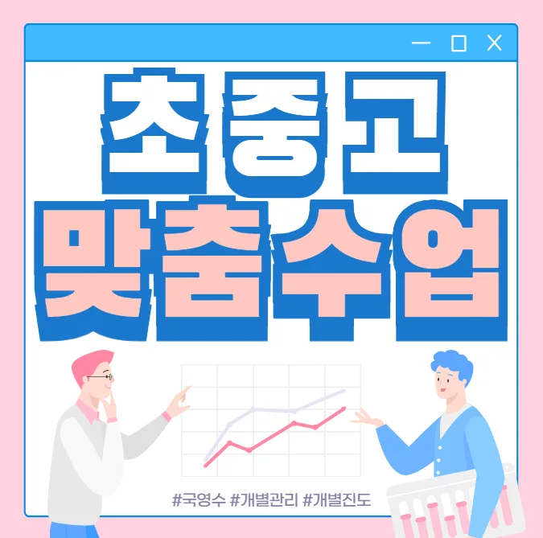

첫째, 교육 철학이 학생 개별 성장에 초점을 맞추는지 확인해요. 둘째, 강사진이 현직 교사 출신이거나 전문 강사인지 검증해요. 셋째, 수업 시간에 복습과 피드백이 충분히 이루어지는 구조인지 살펴보면 도움이 돼요. 넷째, 대구역 초등 수학학원 시설이 안전하고 학습에 집중할 수 있는 환경인지 직접 방문해요. 마지막으로, 대구역 주변 학부모들의 입소문과 후기를 종합해 신뢰도를 판단하면 좋겠어요.
대구역은 아파트와 단독 주택이 어우러진 주거 환경이라 학부모님들께서 교육에 많은 관심을 가지고 있어요. 초등 저학년은 기초 학습 습관 형성이 핵심이라 놀이와 연계된 수업이 효과적입니다. 초등 고학년은 교과서 심화 내용과 실생활 연계 프로젝트를 통해 사고력을 키우는 것이 중요해요. 중학생은 진로 탐색과 과목별 심화 학습이 동시에 진행돼 시간 관리 능력이 요구됩니다. 고등학생은 목표 대학 입시 전략에 맞춘 맞춤형 과목 보강과 모의고사 분석이 큰 도움이 됩니다. 전체적으로는 학년마다 학습 목표와 피드백 주기를 다르게 설정해 지속적인 성장 추적이 필요해요.
와와학습코칭센터는 학습 동기 유지 전략을 체계적으로 안내해 아이가 스스로 목표를 설정하도록 돕어요. 주요 대상은 기초 실력이 고루 고르지 않은 학생이며, 커리큘럼은 기본 개념 이해 응용 문제 풀이 피드백 단계로 구성돼요. 강점은 감정 없이 오답을 논리적으로 분석하고, 자가 체크표를 활용해 몰입도를 스스로 관리하게 하는 점이에요. 교실은 조용한 구역에 위치해 집중력을 높이고, 주제별 자료를 직접 만들면서 학습 효과를 극대화해요. 수강료는 피아노(고급) 160,000원 | 피라노(초급2) 130,000원이며, 비용 대비 높은 교육 품질을 제공해요.
| 학원명 | 와와학습코칭센터 |
| 수강료 | 피아노(고급) 160,000원 | 피라노(초급2) 130,000원 |
CURRICULUM
커리큘럼은 주제별 집중 훈련과 주간 운영 계획을 병행해요. 초반에 수업 참여 의지가 낮은 학생에게는 실전 연계형 문제와 핵심 요약을 혼합해 흥미를 유발하고, 학습 공간을 활용해 집중력을 높여요. 학습 상태를 객관적으로 평가하는 단계별 테스트를 통해 현재 위치를 파악하고, 맞춤형 보강 수업을 제공해요. 전체 과정은 원리를 이해하고 적용하는 순환 구조로 설계돼 있어, 학생이 스스로 학습 흐름을 잡을 수 있게 돕죠. 대구역의 다양한 학부모들이 이 체계적인 흐름을 높이 평가하고 있어요.
중간고사 직후 오답 클리닉을 진행하면 기말 전 전 과목 평균 점수가 15점 정도 상승하는 경우가 많아요. 학생들은 시험 직전 급하게 복습하는 경향이 있어 핵심 개념을 놓치기 쉬워요. 이를 방지하기 위해 목표 달성률을 그래프로 시각화하고 꾸준히 관리하도록 돕는 시스템을 운영해요. 이러한 관리가 실수 감소와 성적 향상에 직접적인 영향을 미쳐요.
수업 중 질문을 직접 끌어내는 흐름을 설계해 학생 스스로 고민하도록 유도해요. 시즌별 주제와 연계된 복습 과제를 제공하고, 과제 제출 후 즉각적인 피드백을 통해 이해도를 점검합니다. 심리적 안정을 위해 수업 시작 전 짧은 명상 시간을 갖고, 진도와 이해의 균형을 맞추는 페이스 조절을 실시해요. 시험 전날에는 수면과 식사 패턴을 재현해 컨디션을 최적화하는 연습을 함께 진행합니다.
추천 대상은 중학교 2학년으로 교재를 열심히 풀지만 응용 문제에서 막히는 경우가 많은 아이예요. 매번 처음부터 공부를 시작하는 습관 때문에 기초가 흔들리고, 시험 직전에는 급하게 복습을 시도하게 되죠. 이런 학생에게는 체계적인 학습 플랜과 꾸준한 피드백이 필요합니다. 목표를 작은 단계로 나누고, 매일 일정량을 재학습하면서 점진적으로 실력을 쌓아가면 자신감도 함께 상승합니다.
수업이 시작되면 교실 안 분위기가 차분해져 집중이 잘 돼요. 선생님은 매일 진도 체크를 통해 학습 흐름이 끊기지 않게 관리해 주시고, 질문에도 즉시 답변해 주셔서 든든해요. 자습실 좌석이 일정하게 배치돼 공부 환경이 안정적이고, 필요한 자료를 바로 찾을 수 있어요. 피드백 시간에는 글 한 줄씩 교정해 주시면서 발전 방향을 명확히 제시해 주셔서 큰 도움이 돼요. 선생님이 아이의 집중 시간을 고려해 수업 속도를 조절해 주시니 피로가 덜하고 학습 효율이 높아져요. 문제 해결 과정을 스스로 정리하도록 지도해 주셔서 자기주도 학습 능력이 눈에 띄게 향상돼요. 전체적으로 따뜻한 분위기와 체계적인 관리 덕분에 학습에 대한 자신감이 크게 상승했어요.

| 학원명 | 와와학습코칭학원 |
| 등록번호 | 제3918호 |